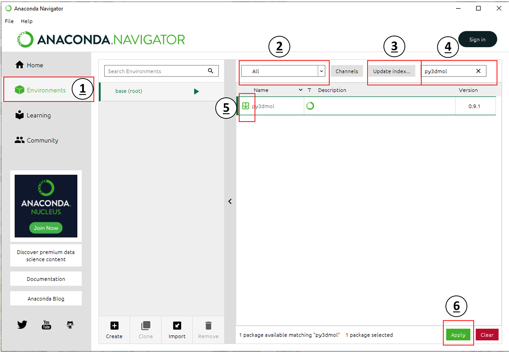

Set Up¶
This workshop covers data visualization using the Python programming language. Before proceeding, you should be familar with python syntax like setting variables, logic statements, and for loops, and using a Jupyter notebook. It is also beneficial for you to have experience with NumPy arrays.
If you don’t have this experience, we recommend first checkout out the first four lessons MolSSI’s Intro Python Workshop. You can see recordings from a webinar series which covered this material here.
Installing Python through Anaconda¶
Python is a popular language for scientific computing, and great for general-purpose programming as well. Installing all of its scientific packages individually can be a bit difficult, however, so we recommend the all-in-one installer Anaconda.
Navigate to the download page for Anaconda.
Download the appropriate installer for your operating system. Make sure you get the installer listed under Python 3 (not 2.7).
Double click the installer icon and follow the set-up instructions, keeping most of the default options. If you are Windows, make sure to choose to choose the option Make Anaconda the default Python during installation.
Obtain lesson materials¶
Download the files needed for these lessons here.
Create a folder called
python-visualizationon your Desktop.Move the downloaded materials to the new folder.
Unzip the file.
Install py3dmol¶
From Finder or Spotlight (Mac OS) or the Start Menu (Windows) find the Anaconda Navigator. The icon looks like a green circle. For this workshop, you will need to install a Python package that does not come by default with Anaconda. From your Anaconda Navigator window, click the button on the left side which says “Environments” (1 in the image below).

Next, make sure the drop-down menu labeled with 2 is set to All. Click the button labeled in 3 and wait for this check to complete. Then, type py3dmol into the search bar labeled in 4. Select the checkbox next to the result in 5. Then, click the Apply button labeled in 6 to download and install the package py3Dmol. This package is a molecular visualizer that can be used in browsers and Jupyter notebooks.
Start a Jupyter notebook¶
Click the “Home” button on the left side of the Anaconda Navigator window (above “Environments, labeled by 1 in the image above). Click Launch under Jupyter Notebook. It may take a few seconds to load the page, especially if it is the first time you have ever used the jupyter notebook, so don’t panic if nothing loads for a few seconds. Then a new window should open in your default internet browser. Use the file navigation window to navigate to Desktop and then to the python-visualization folder. In the upper right hand corner, click New, then choose Python 3 from the dropdown list (shown below)

This will start a new Jupyter notebook using Python 3. You’re ready to go!